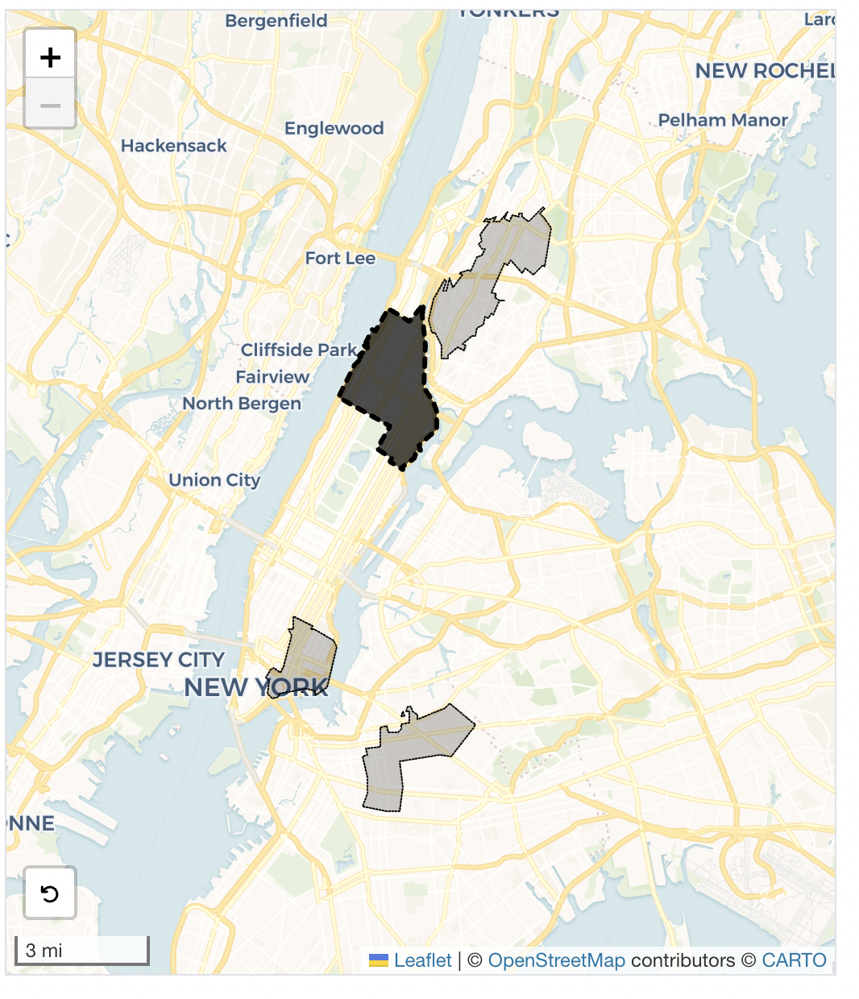

East Harlem, New York — East Harlem and Randalls Island residents reported the most rodent activity in 2025 than any other neighborhood in New York City, according to 311 data. Residents of Zip Code 10035 reported a total of 1,484 rodent-related issues, nearly 40 requests for every 1,000 residents.
This comes in spite of Mayor Eric Adams’ plan to target East Harlem for rat mitigation efforts.
In November 2022 Mayor Adams designated Harlem, parts of Lower Manhattan, the Central Bronx, and BedStuy and Bushwick in Brooklyn as “Rat Mitigation Zones”. The initiative focused on leaving trash outside for shorter periods of time, sealing cracks in buildings, and ordering property owners to remove conditions that lead to rat issues, according to the mayor’s report.
The plan saw some success. Rat sightings in Bedstuy and Bushwick fell from 810 in June 2022 to 496 in June 2025, according to the city’s analysis of 311 complaints.
Over the same period, however, rat sightings in the Harlem mitigation zone increased from 501 to 933. In 2025, East Harlem and Randall’s Island were leagues ahead of other parts of the city. Prospect Heights and Crown Heights came in a distant second with 571 service requests, almost 10 for every 1,000 residents.
Ongoing issues with poor housing conditions and upkeep may be to blame. Just this week, tenants in one East Harlem building won a settlement after going on rent strike due to poor conditions in their building, according to a report from City Limits.
However, school children in East Harlem may have a lower chance of encountering rodents, mice or roaches. Inspections of school cafeterias found that only 12% of school inspections in the district resulted in pest violations. By contrast, in Glen Oaks in Queens and Averne on the Rockaway Peninsula, over half of school inspections turned up evidence of pests.
311 service requests are self-reported, whereas cafeteria inspections are external, which may account for the disparity in the data.
However, experts say similar conditions may account for pest issues in schools and on the streets.
“Older buildings are more likely to have cracks and leaks which makes it easier for pests to enter, and sanitation difficult to maintain,” Deborah Olarte, an Assistant Professor of Nutrition at NYU.
Nick Freudenberg, a Professor of Public Health at Hunter Collage, emphasized the importance of putting pressure on schools to change conditions, rather than merely reporting them.
“Inspecting regularly is a good thing, but it only makes a difference if there are incentives and penalties for schools not acting on those findings,” said Freudenberg.
For now at least, students in East Harlem and Randall’s Island can take refuge from rodents in their school cafeterias.